我是如何走进黑客世界的？
我想给你一把打开这扇门的钥匙，而你要做的便是静静的聆听接下来的故事。挖掘 0day 一般需要掌握fuzzing，IDA Pro反汇编WinDbg调试等技术。
一点小东西
我最先接触到的是fuzzing，它所带来的自动化，让我陷入痴迷。
我从网上疯狂的查询资料（因为我之前见识过浏览器0day的威力，只需要点击一下链接，那么你的机器便会被控制），我发现了这个fuzz浏览器的工具，我把这个工具包放到了github上，大家可以自行下载，解压密码是下面图片所展示的那个。
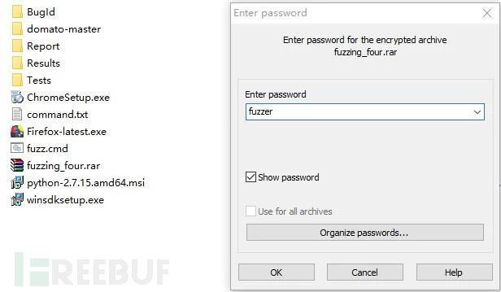
使用前先安装图片左下角的winsdk，在安装时只勾选"Debugging Tools for Windows"一项，然后在command.txt文件里面配置python以及cmd的路径。
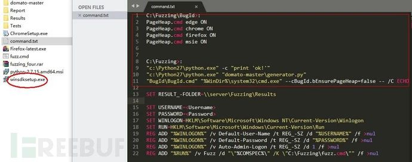
可以在fuzz.cmd文件里面指定你想要测试的浏览器，它会去寻找可以让浏览器崩溃的Payload。目前支持Firefox、Chrome、Edge和Mise四款浏览器。
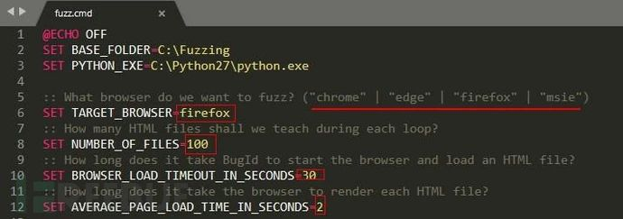
下面是这个工具的效果图。
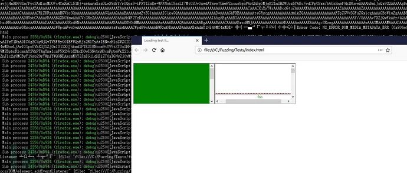
而相似的工作在Linux平台下使用可以更加高效。
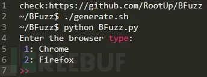
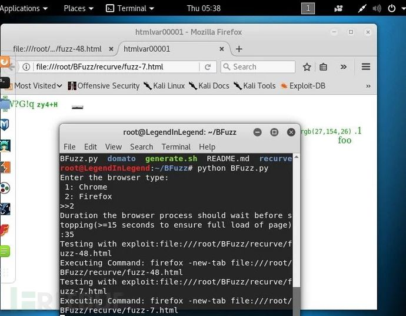
尽管今天的核心并不是上面的那些，但是仍旧感谢这些朋友的分享。
如果拿到了Crash，便可以申请CVE了，下方是一个CVE申请报告的编写样例，在申请时可以作为参考：
Report(CVE-2018-11396:https://bugzilla.gnome.org/show_bug.cgi?id=795740 )
正文
那么我将要讲述的是，我是如何学到这些的。
首先想要说的是Twitter，它是黑客世界的好伙伴，学会并熟练使用它非常重要。
我们可以在Twitter上面搜索诸如"fuzz"、"fuzzing"、"fuzzer"等关键字；或者在关键字前面添加"#"，例如"#fuzzing"，那么将会限制为只搜索fuzzing话题。
当我搜索fuzz 1337时，则发现了这篇文章 Fuzz in sixty seconds,它所介绍的便是最开始的那个fuzz浏览器的工具。
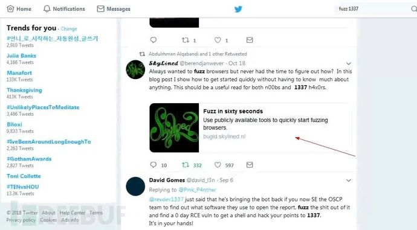
当我搜索fuzzing时，则发现了关于BFuzz这个工具的介绍，也是用来fuzz浏览器漏洞的。
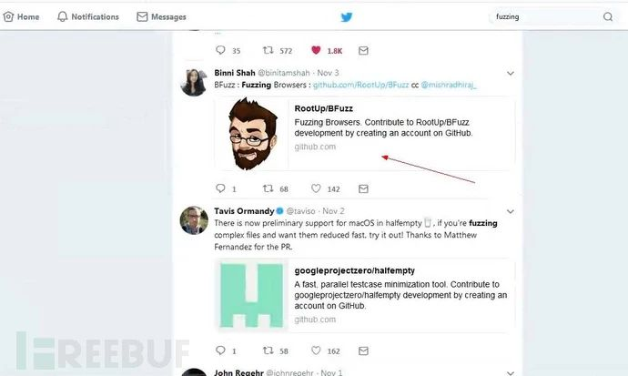
还有很多诸如此类的关键字可以搜索，你可以自行摸索。
有时候我会去看一些视频形式的分享，因为看视频可以让我更加容易的理解。
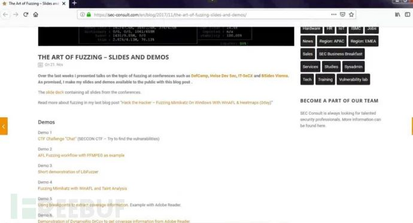
如果你也想通过视频来学习的话，强烈推荐Youtube。
Youtube
向下图展示的那样，如果你想看的视频在语言问题上有一些困难，那么你可以点击右下角的按钮，它会解决一部分语言的问题。
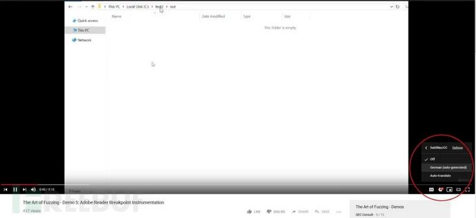
当语言问题不再是问题时，此时你可以泡上一杯咖啡开始像欣赏电影一样尽情的遨游在黑客的世界里，像"Defcon"、"BlackHat"、"OWASP"、"CernerEng"、"hacktivity"等都是不错的视频选择。
还有Bugcrowd的bugcrowd university，hackerone的hacker101；他们则会教你如何挖掘web漏洞，并且获取漏洞赏金。
你感兴趣什么便搜索什么，例如我对APT非常感兴趣，于是我便会去搜索关键字APT，下面是我在Defcon里面搜索APT关键字得到的结果：
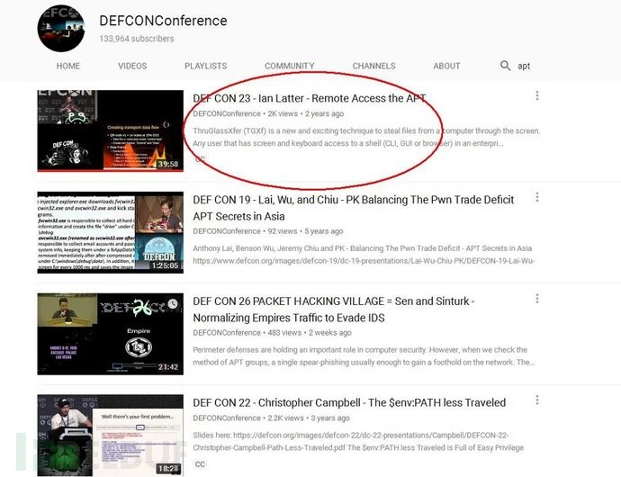
分享者分享了一个被称为"TGXF"、"TKXF"/"TCXF"的技术。它可以实现脱离网络传输文件的效果，只需要扫描二维码便可以在手机和电脑之间传输任意文件；更酷的是甚至还可以通过摄像头在电脑与电脑之间传输任意文件。
虽然这是15年分享的技术，但是在17年，仍旧有人在不断展示这个技术，甚至现在在我们国家也仍旧没有普及，
利用这个技术来窃取机密文件即使是现在这个时候，也丝毫不落伍。
当我搜索"how to find bug"这样的关键字时，找到了下面这一个视频：
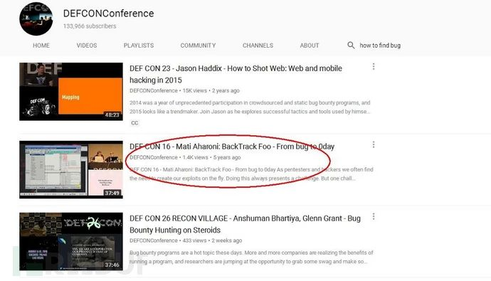
作者现场演示了如何一步一步挖掘一个0day，从开始到结尾，从无到有，可以完整见证一个0day的诞生；在视频的最后，可以看到全场掌声如潮。
如果你想学习漏洞挖掘，那么推荐"Bug Bounty Public Disclosure"这个订阅号，尽管里面全都是已经修复的漏洞，但是并不影响对我们的帮助。
当然，也可以直接搜索"bug bountry"关键字，然后筛选你需要的。
一些建议：
我用 simplenote 这款软件进行我的简单笔记，分别是 video & paper learning, 用来记录我通过文章和视频的学习过程，"finished"表示我学习了全部，"1"表示 我进行了一次学习。

Write-Up
可以理解成一些经验之谈。
pentesterland：如果你是渗透测试人员，那么这个站点对你的作用将是巨大的。
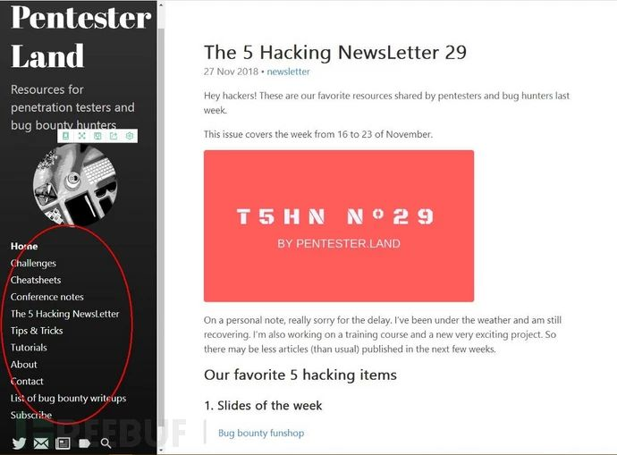
https://pentester.land/list-of-bug-bounty-writeups.html：这里面收集了过去到现在的所有经典的挖洞过程。
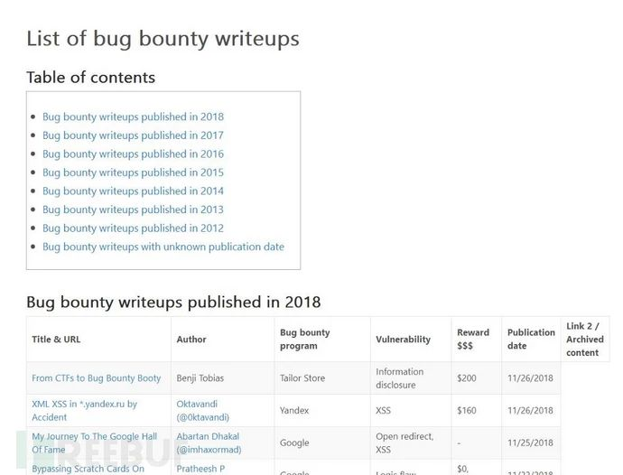
Bug Bounty Reference：里面几乎囊括了所有与web安全相关的技术点。
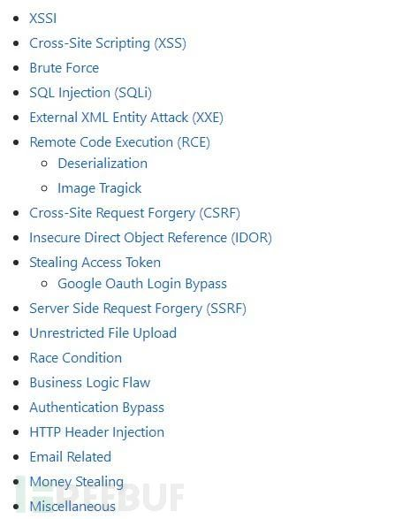
PayloadsAllThings：不管你是红队，渗透，ctf 玩家，你都可以在里面获得你想要的资料
新闻
作为黑客，你肯定要了解最新的新闻，国内外我推荐两个：
Thehackernews: https://thehackernews.com/
Freebuf：https://www.freebuf.com/
它们同样能给你很多帮助，例如文章语言不是我们的母语，你感到非常吃力的时候，那么可以在 freebuf里面寻找小编翻译好的外文文档，clouds 经常翻译挖洞经验的文章，你可以直接的进行学习。
在 thehackernews 里面，我看到了”sandboxescaper”的新闻，虽然在她的 twitter 上大部分时间在骂人（哈哈,lol~），但是她仍旧分享了逆向挖掘 ALPC 0day的技巧。
还可以看到她分享的她学习的方法：1.在Youtube上面看视频 2. Google查询相关资料 3. 实操。
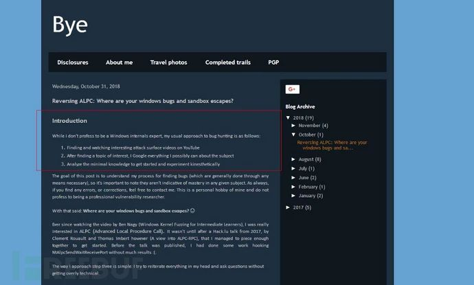
文章的最后还可以看到参考文章，这些都非常有价值。
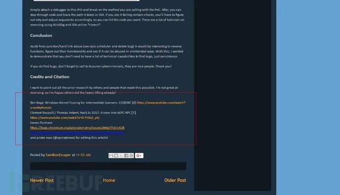
工具
不要相信"脚本小子论"。除了尽快的学习最新的1day/nday，学会利用它们相关的工具也可以让你快速成长。
Kitploit:里面介绍了很多的黑客工具。
如果只看文章，对于工具的操作仍旧不是很明白，那么此时可以去Youtube上搜索这个工具的相关关键字。通过查看分享者，可以让你收集很多分享黑客工具的人，你可以关注他们，随时跟进。
例如搜索"RAT"时，你可以测试搜搜到的每一款工具，看是否仍旧可以绕过杀软。当然相关的关键字还有很多，如:"rat fud"跟"bypass av"都可以获取相关的搜索结果。
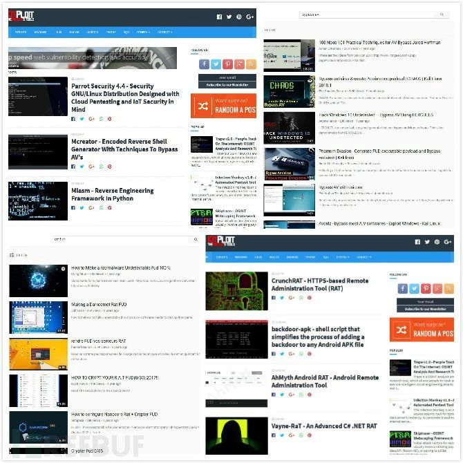
只要对自己有用的，都应该记录到自己的笔记里面，不用顾及会不会太多。
如果你想进一步提高自己，你还可以阅读这些工具的源码，他们大部分是Python、Ruby、Perl语言编写的。
还可以学习编程、计算机科学等提高自己。这些我在后面都会有提到。
而windows平台下的黑客工具包，太多了，你随便一搜便会找到很多，像：扫描、暴力破解、间谍软件、EXP等都可以找到
Connect-trojan：这是一个RAT下载器，可以找到A-Z大概几百款国外的RAT，很多APT组织都会进行大量的利用这些。里面的很多开源工具都可以进行二次开发，定制为自己的专属工具。
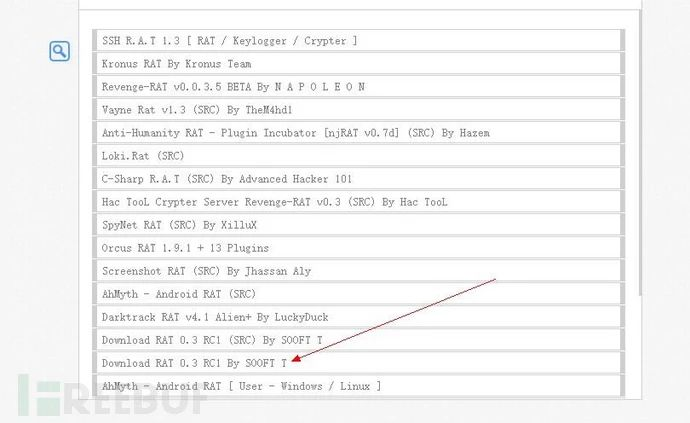
这是两个黑客论坛：
Offensive Community:http://offensivecommunity.net/
Cracking:https://cracking.org/forums/cracking-tools.16/
强烈建议：千万不要去百度上搜索"黑客"、"黑客教学"、"黑客论坛"、"黑客排行榜"、"黑客教父"等这些东西，它害了多少中国热爱 hacker 的孩子，让他们还不知道什么是 hacker 精神的时候，就迷失在了恶作剧、违法、金 钱、虚荣、交智商税的怪圈里；强烈的抨击那些混蛋们。
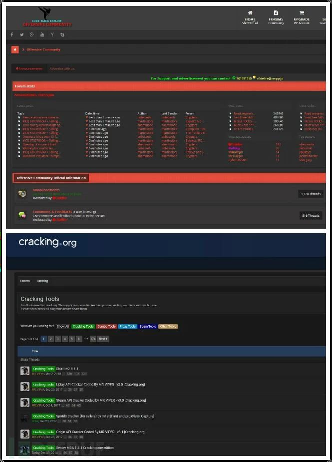
1/nday&Exploit
关于漏洞的利用Metasploit是效率最高的工具。
在这里能获得最新的漏洞利用：https://github.com/rapid7/metasploit-framework/pulls
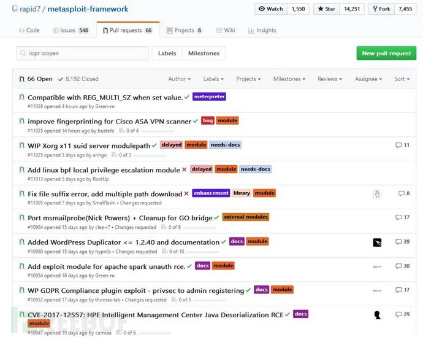
Twitter跟Youtube在这里仍旧是有效的工具。
如在twitter上面搜索"#exploit"、"#0day"。
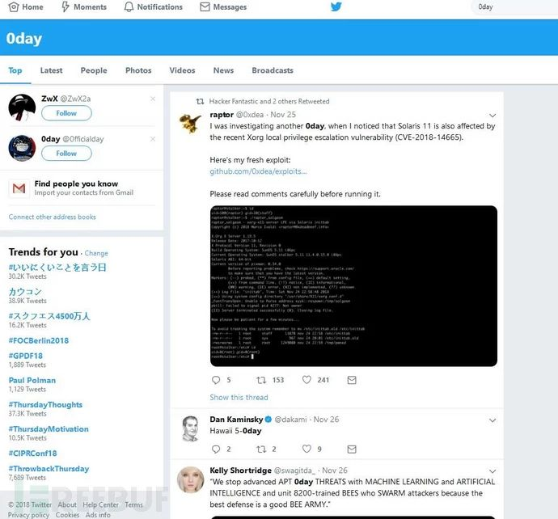
在Youtube上面搜索 "CVE+年份"
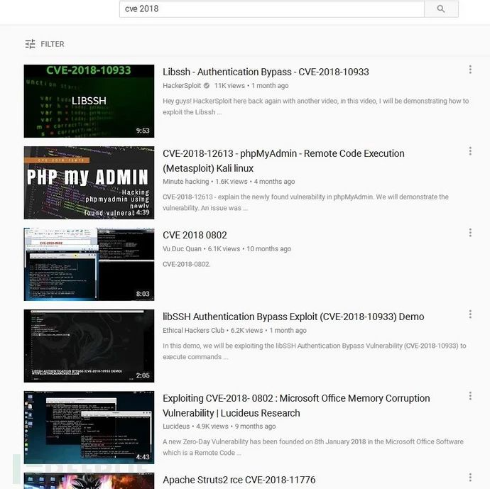
除了黑客大会上的分享，Youtube上的结果也需要筛选，不要直接搜索什么黑客教程，因为有很多傻子在黑"hacker"这个东西。
知识来自于网络世界，也服务于网络世界，因为是宝贵知识，所以需要你花费努力才能筛选出自己需要的结果，不要相信不劳而获的东西，不然你会 上当受骗。
一些其他的东西
二进制入门：https://www.youtube.com/playlist?list=PLhixgUqwRTjxglIswKp9mpkfPNfHkzyeN
逆向工程：https://www.youtube.com/results?sp=EgIQAw%253D%253D&search_query=reverse+engineering
里面都是一些很好的课程，像"linux","macos"的逆向，也有101 to master系统的学习。
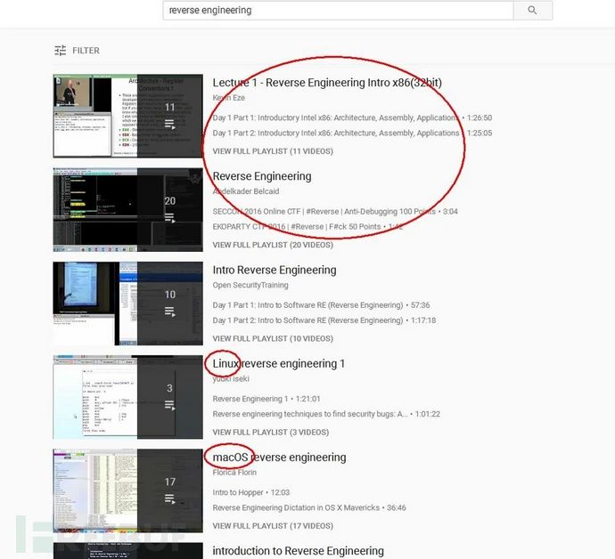
下面是一个我在搜索"fuzzing"关键字时找到的一个fuzz浏览器的视频。
https://www.youtube.com/playlist?list=PL00QFekqLCCLvF4iaP8FLuUuot2OIsiqq
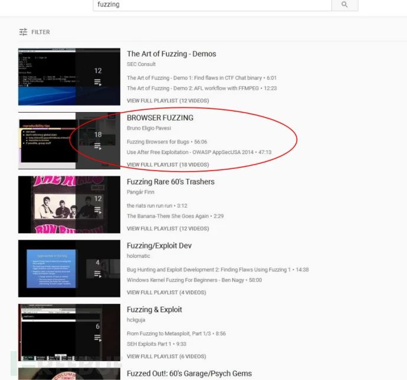
如果你比较排斥中文以外的东西，那么上面很多东西对你来说都没有什么帮助。
于是我强烈推荐 Bilibili，它也可以帮助你成为强大的黑客
这里面有"操作系统原理"、"计算机编程语言"、"计算机科学"、"算法基础"等很多优秀课程，甚至是国外的知识，并且都是翻译好的，你只需要坐下来学习就可以了。
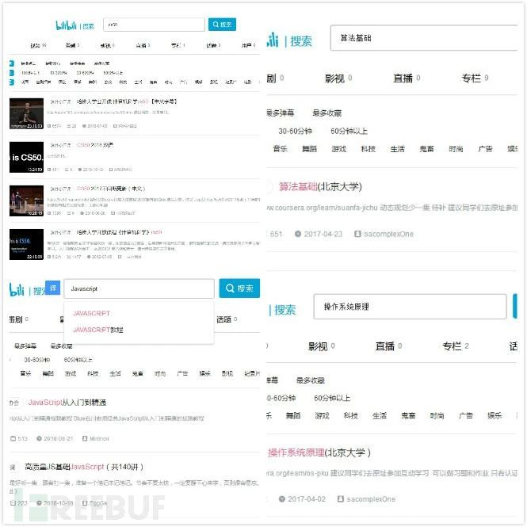
汇编、 C、Python、Javascript，这些你都能在里面找到，操作系统原理，哈佛的 cs50，计算机科学等就像内功一样，它们太重要了。
当你看透二进制世界的时候，可能便不仅仅限于hacking 了，人工智能，大数据，还有更多的东西，你都可以在里面找到，非母语的问题到此便可以解决了。
附
"我们不是凡人，我们需要一点魔法" - 诺兰三部曲
Instagram: 你可以在这里找到太多优秀的图像作品（我非常喜欢摄影），甚至hacking，hacker，exploit,可以找到很多黑客元素的东西。
Vsco:如果你喜欢摄影，但平时却用手机，希望图片可以变成摄影作品，那么可以选择这个网站。
Appstore上的一些应用：
Huji ：能拍出胶片感，年代感
轻颜：妹(汉?)子会喜欢的，你总要找女(男)朋友的吧
Basketball: 运球，投篮，弹跳，球商(“ball IQ”),很多热爱 hacker的人也是球手，上youtube，当然包括最好的关于nba的东西，the professor，ballislife, in the lab 等等 check it!
古典乐方面(也许有一天也会用上):
肖邦:https://www.youtube.com/channel/UCSTXol20Q01Uj-U5Yp3IqFg/videos
爱乐: https://www.youtube.com/playlist?list=PLYiZl0A2kNDU-JMqvdBh-hjP6W-DTvNa8
霍罗威茨:https://www.youtube.com/watch?v=8ELwCdgGQLQ
“Skr Wu”的”auto-tune”(它前段日子太火了): AdobeAuditionhttps://www.youtube.com/results?sp=EgIQAw%253D%253D&sarch_query=Adobe+Audition
记得安装插件，录音后期这方面的知识可比学习hacker容易的多。
魔术：我知道很多喜欢hacker的人都喜欢魔术、社工、钓鱼、浏览器攻击，黑客的很多技巧何尝不是魔术呢。 优酷或许比youtube更适合学习魔术，不要直接搜索魔术教程，你可以试试那样的会找到什么东西，就好比在百度上搜索黑客教程。
https://v.youku.com/vshow/idXMzcyNjU3MDAw.html?spm=a2h0j.11185381 .listitem_page1.5!12~A
说了那么多，我要送给大家的最后一份礼物是我新的github：hacking Library
我暂时想不起更多的东西，但我爱你们。
人生不仅仅是 hacker，在有限的日子中活出更多的可能吧。
Data hunter: 这是我在尝试数据猎人时期收集到的一个地方，你可以下载它们，也可以在里面搜索你需要的，还可以把它做成一个havebeenpwd，不要花钱去购买，因为它们都是老的东西；不要用在违法上，因为它们依旧有危害；不要卖到 deepweb 上换得一些酬劳，我见过有人这么做。
这些东西可以用在好事上，比如保护家人、朋友的隐私。
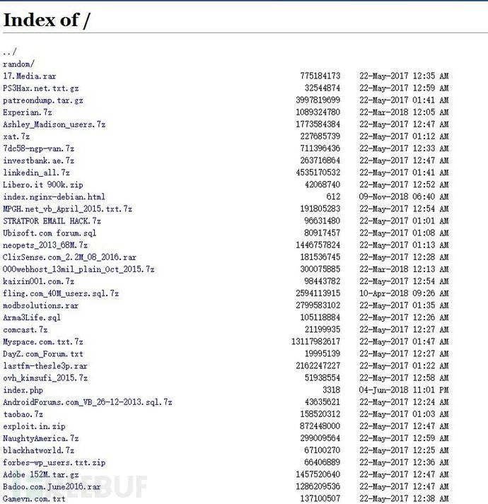
我不知道多少掌握技巧的”坏人”可以轻轻敲击几下键盘查看所有人的情况，并且恶意利用，各个地方的信息都在传输到隐私的海里，我们已经在海上，如果拒绝上传无法保护你的隐私，你只能尝试着变成一滴水，混在这片海里(破了的洞已经堵不住，那就应该造一面镜子)。
sploitus : 漏洞搜索引擎，可以最快的帮你找到公开的漏洞
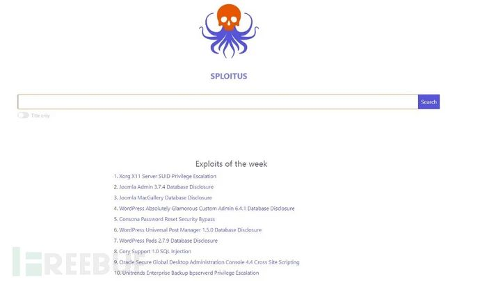
media.ccc.de： 伟大的平台，搜索你需要的东西，获得知识。
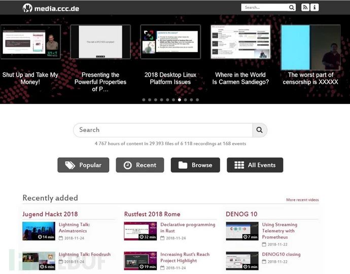
跟其他安全人员交流:
在Twitter上，你可以直接分享你的经验给那些开启私信功能的安全研究人员们。
即使名头很大粉丝巨多，或者一些安全公司甚至某些专家、黑客书籍的作者，亦或者出名的大牛还是一些低调独立的漏洞猎人（Bug Hunter），只要开启了私信功能，那么你便可以发送你确切具体的问题，90%的人都会答复你。
千万不要害怕交流和询问，每次尝试你都终将会获得帮助。
结尾
“心能转物，即同如来” ,在任何困难的时候，别无他法的情况下，改变自己的心境，才能改变现状；
“天上天下，唯我独尊” ,你已经来到这个世界，便是独一的，别人的成功与否与你关系并不大，不要羡慕和追捧它人，那只是消磨你的时间，专注于完成你自己的生命修行，遵照你的内心，更少的不受外物所扰，活成一个传奇。
本文原创作者：MyselfExplorer；翻译编辑：楼兰

请务必记住下面这句话
不要相信"脚本小子论"。除了尽快的学习最新的1day或Nday，学会利用它们相关的工具也可以让你快速成长。
多折腾，多搭建环境和解决问题，你才能成长的更快
而不是当一个去QQ群提问的人
学会谷歌和百度
多问问老师傅。最怕的就是没有方向
不知道下一步学什么
先坚持一个方向，先精通一门再说其他的
一定要看重基础，对每个漏洞的理解，服务架构的理解，数据库的理解，
一个人的知识面决定着攻击面。
其次是实战，在实战中不断积累经验，对所学的知识加以利用，才能不断提升自己。
多踩一些坑，也是一种成长